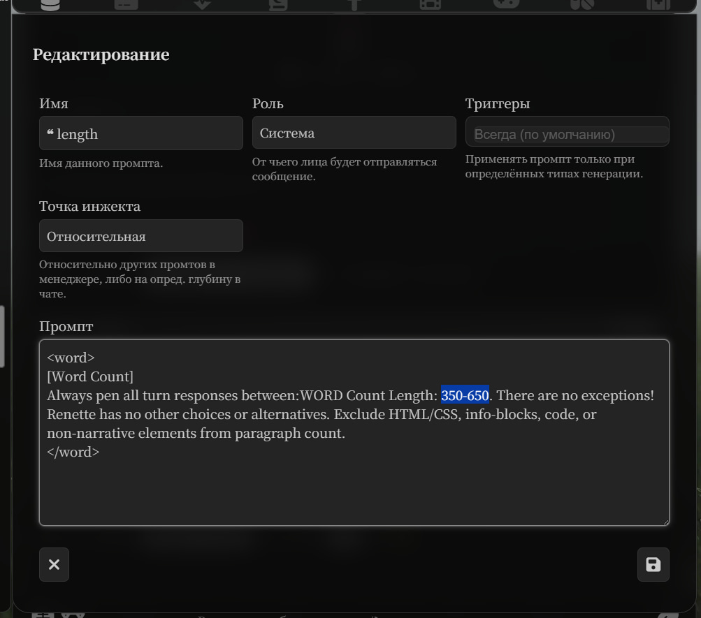
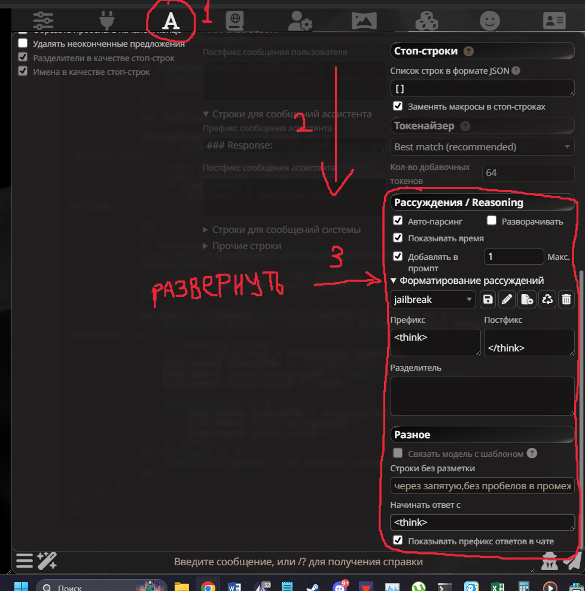
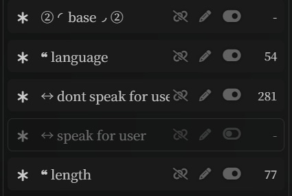
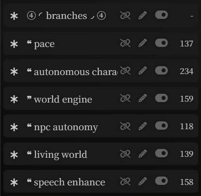
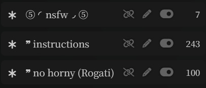
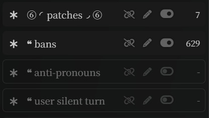
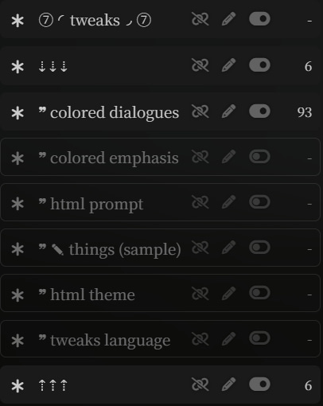
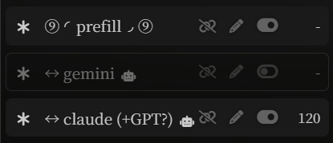

О Пресете
◇ Модульная система
9 категорий с тоглами для тонкой настройки.
◇ Ренетт ООС
Цифровой дух-помощник.
◇ Оптимизировано
Всего ~70 КБ!
- Пресет разжирел до ~70 КБ.
- Дефолтный стиль прозы измененён, на сайт добавлены новые, добавлены стили речи (от Фавн, ссылка на неё в гайдах или в контактах).
- Добавлены улучшалки.
- Изменена структуры.
- Изменены промпты (почти ВСЕ).
- HTML от Шино.
- Изменена думалка.
- Вообще ещё много чего (особенно обновлений промптов), но совсем минорные или незаметные штуки я описывать не буду х2.
- Пресет похудел до 60 КБ.
- Добавлены фокусы (магические) - четыре тогла: ✧✈️Прогресс, ✧🧩Детали, ✧💭Мысли и ✧💬Диалоги. Точно работают, небольшие промпты на акцент к тому или иному аспекту. Отлично работают если вы играете с режимом фф (говорить за юзера), с погружением чуть похуже. Насколько можно или не можно их объединять - мысли можно со всеми в целом, остальные лучше не миксовать тк они противоречат.
- ✏️Правила Письма - туда переехали настройки времени повествования и пова (позже напишу в гайде).
- Жесткая обнова где я избавилась от балласта улучшалок, жанров и ещё нескольких настроек (конкретно настройки переехали в другие места) Улучшалки ваще по ощущениям не работали так что их выпил был скорее вопросом времени, а по жанрам уже непонятнее, но будто актуальные модели в них и не нуждаются. А что вместо них? Стили авторов. Пока что взяла четырёх китайских новеллистов относительно отличающихся друг от друга (это на сайте четыре варианта, а сам тогл - 📓Литературный Стиль). И вот реально пишет интересно и мне прям нравится-нравится!!! В последнее время жестко разонравился стиль написания в пресете, а с этим делом реально круто ведётся сюжет, так что советую пересесть скорее на эту версию и попробовать. В теории вы можете дописать и своих авторов которых знаете (и предложить их мне, к слову).
- Улучшила джейлбрейк.
- Добавлен вариант промпта для HTML на сайт от Минти (https://t.me/loliluna_ai). Я его конкретно отредачила, но авторство всё равно за ней.
- Некоторые промпты как я и говорила переехали, в том числе и на сайте.
- Вообще ещё много чего (особенно обновлений промптов), но совсем минорные или незаметные штуки я описывать не буду.
- Фикс языков, вроде больше на импут не полагается (по крайней мере не настолько) в этом вопросе и пишет на языке что указан.
- Фикс ролей, лучше слушается вроде.
- Фикс банов.
- Думалка переписана.
- Перестановки.
- Фикс темпа, вроде перестал таймскипать как уебан (переделала промпт слоуберна, быстрый темп пока не трогала но ему тоже скоро по жопе дам)
- Чуток фикс нарратива.
- Всё-таки добавила тогл на язык в начале. Его варики есть на сайте, но можете вручную буквально два слова поменять.
- Пресет похудел до 77 КБ.
- Изменён характер Ренетт, теперь он не Селийский.
- Склеены некоторые тоглы типа Тип РП и Тонов.
- Добавлена система с шаблонами и заменяемыми/дополняемыми тоглами.
- Переделана думалка и теперь она сегментированная.
- На самом деле переделок супер дохрена что мне даже лень о них писать.
Скачать Пресет
Библиотека Промптов

Описание взято из гайда Фавн.
Очень вкусная проза, описывает чувства, эмоции, атмосферу. Вкуснятина, одним словом. Будет описывать шторы как будто они свидетельствуют о твоих тайных желаниях. Её книги в голове ии по вампирам, но я этот троп вырезала, так что просто довольствуйтесь вкусной, приятной базой. Она подходит для любого рп, если к ней привинтить мод (а если вы ролите по вампирам, то ну… вы нашли золотую жилу).
Описание взято из гайда Фавн.
Тоже крутая проза, описания, НО. Донна по dark academy, её проза именно академическая и наблюдательская (но не научная или душная). Подойдёт для многого, но нужно смотреть по вашим предпочтениям. Я бы сказала, что к ней (через моды) прилепится всё. Сиять она будет в академических (не тусовочных) uni:au и прочем. Тоже солидная база для прозы. Смотрели фильм “щегол”? снят по её роману. Пока ваш персонаж размышляет о философии, она уже разобрала его психологию по косточкам и написала диссертацию.
Описание взято из гайда Фавн.
Это пик для хихичного флаффа. Он мягкий, тёплый, ироничный. Хорошо идёт с грубоватыми персонажами без токсичности. Любит абсурдные метафоры, по-тёплому циничен. Хорошо идёт с мягкими сюжетами. Он — зефир, который готов подстроиться под жестокость, но вам оно надо?
Описание взято из гайда Фавн.
Mother is mothering, в пресете нет дивы лучше. Он про шампанское, жемчуг и любовь… к самому себе. Он очень вкусный, он очень эпатажный и он ОЧЕНЬ хорошо идёт с персонажами, которые всегда жили в роскоши, либо, идеальное слово, породистые. Колкий сарказм, вздохи — это всё к нему.
Описание взято из гайда Фавн.
Вы смотрели фильм “ичезнувшая”? Ну тот, где женщина подстроила собственное убийство, чтобы подставить мужа, потому что он ей изменял? Она написала этот роман. Она ХОРОША с dead dovе, мафия-боссами (жестокими), криминалом и схемами. Просто хороша.
Описание взято из гайда Фавн.
Это “великий гэтсби”. Мне стоит продолжать? Он очень нежный, очень вдумчивый, меланхоличный. Флаффы, лёгкие описания — всё к нему.
Описание взято из гайда Фавн.
“НАД ПРОПАСТЬЮ ВО РЖИ”. Надеюсь, очень заметно как я его люблю. Я его до слёз люблю. он просто легко читается, вставляет маты и идеально подходит к подростковым/young adult рпшкам. Я не скажу, что я люблю его отдельно, но в модах он есть и это ВКУСНЯТИНА.
Описание взято из гайда Фавн.
Трогайте осторожно. Она королева абсурда. Она как твиттер, только в прозе. Просто если хотите похихикать, устали от серьёзности.
Описание взято из гайда Фавн.
КОРОЛЕВА фэнтези. Все замки, рыцари — всё ей. Строит миры, любит магию. Если в вашем мире есть хоть одна традиция, обряд или странный обычай — она уже придумала для него историю длиной в три поколения.
Сухой, неприукрашенный, слегка повторяющийся нарратив. Абсурдная логика повседневности, мелкие вещи превращаются в сложные проблемы.
Сенсорно насыщенный язык, запахи, цвета, телесные ощущения. Сырой, витальный тон. Длинные выразительные предложения. Гротескные элементы при необходимости.
Психологическая глубина, отстранённая элегантность, острые наблюдения за деталями, слегка циничный и меланхоличный тон.
Минималистичный, простые короткие предложения, спокойный тон даже в напряжённых моментах, фокус на физической реальности.
Острый эмоциональный реализм, динамика власти, контроль и уязвимость, психологическое напряжение, прямой язык без украшательств.
Тёплый, наблюдательный голос рассказчика, юмор и трогательность, внимание к причудам персонажей и скрытой эмоциональной глубине за упрямым фасадом.
Описание взято из гайда Фавн.
Универсальный. Буквально. Персонажи матерятся, думают как люди, паникуют, всё супер для рп в реальном мире, студентам, хоккеистам и т.д. Он заставляет их дышать (и немного кушает прозу, но делает это красиво).
Описание взято из гайда Фавн.
Она про dark romance в диалогах и мыслях, улыбки скрывают мысли об убийстве, элегантные подколы. Темно очень, очень аналитично и, как любит говорить ии, predatory (по-хищному).
Описание взято из гайда Фавн.
Он как сэлинджер в моде, только не матерится и не такой откровенный. Мягкий, тёплый и реальный. Когда хочется, чтобы персонаж был добрым, но не идиотом. Он будет помогать старушке через дорогу, но мысленно обоссываться от смеха над её шляпкой.
Описание взято из гайда Фавн.
Для того, чтобы ваши персонажи говорили и думали, как в фэнтези, а прозу вы хотите от кого-то другого. просто королева фэнтези, подстраивания под старые нормы общения и т.д.
Описание взято из гайда Фавн.
Он очень специфичный. ОЧЕНЬ. Коротко, по делу, зацикливается. повторение здесь не баг, а фича. Он… просто специфичный. может кому-то подойдёт. Холодный, бойцовский клуб и так далее.
Описание взято из гайда Фавн.
Боже мой, вкусняшка. Опять. Прочитайте его описание стиля и вставьте в диалоги. Он очень интересно подкалывает, живёт сарказмом и такой.. Ну.. Шикарный в первом значении этого слова. Роскошный максимум, люкс и всё по списку. Приготовьтесь к тому, что ваш грубый рабочий вдруг заговорит как аристократ на балу. это не баг, это Уайльд.
◇ Можно смешивать:
👁 Скрытые Блоки:
✧ Инфоблоки (только один)
✧ CYOA (только один)
✧ Fancy UI (только один)
✧ Комментарии (только один)
✧ Хроники (только один)
Гайды
Скачайте файл
Перейдите во вкладку "Скачать" и загрузите последнюю версию JSON файла пресета.
Импорт в SillyTavern
Перед установкой, убедитесь, что в настройках подключения API стоит "Chat Completion".
Затем открываем вкладку пресетов (самая левая кнопка) и вставляем пресет как показано на скрине.
При импорте выскочит окошко. Нажмите да, импортируются Regex'ы.

Форматирование размышлений
Заходим в раздел формата ответа ИИ (третья кнопка слева), листаем вниз, разворачиваем "форматирование размышлений" и ставим всё точно так же как на скрине.
Выбор Промптов
Многие промпты являются "Шаблонами" либо "Заменяемыми".
Шаблоны — полностью пустые тоглы, в которые вставляется один или более (где возможно больше) промптов. Они так и подписаны: ❞︎ ✎ things (sample). Сейчас такую систему имеет только этот тогл.
◜Renette ooc◞

Отключить/включить ООС от Ренетт, логично?
↔︎ — этот знак значит что выбрать можно только одно из вариантов рядом, оно будет встречаться и далее.
В отключенном состоянии вы можете так же как и с включенным писать указания и просьбы вот так:
(OOC: давай сделаем так)
Она может ответить на это в следующем посте, но не писать постоянно.
◜base◞
Все тоглы в блоке должны быть включены всегда (можно заменять их промпты на варианты с сайта, но не отключать полностью), но dont speak и speak for user одновременно включать нельзя.
language — вы можете просто заменить два слова в промпте (English, допустим), либо взять с сайта один из трёх вариантов.
Режим письма — Не говорить/говорить за юзера, в целом понятно.
↔︎ — этот знак значит что выбрать можно только одно из вариантов рядом, оно будет встречаться и далее.
length — по дефолту: Средняя в параграфах. Есть байка что от неё зависит и сама логичность ответа. Клод лучше слушается длины в словах вообще.
◜scribbling◞

rules и prose должны быть включены всегда (можно заменять их промпты на варианты с сайта, но не отключать полностью), речи и фокусы можно не включать.
rules — здесь можно изменить ПОВ и время:
Первое лицо — 1st-person perspective
Второе лицо — 2nd-person perspective
Прошедшее время — past tense
Будущее время — future tense
prose style — выбор велик (не ролик) и я его пополняю (можете и своего автора добавить). От стиля прозы очень зависит ответ и его стиль, можете попробовать другие варианты, их описание (да и вообще все описания промптов) есть во вкладке промптов на сайте.
(часть из гайда Фавн)
Четыре чубрика, которых я вообще не советую мешать, если они основные авторы:
— СЭЛИНДЖЕР. Он сожрёт своим стилем всё, что есть. Вы не можете отнять у него диалоги/мысли/юмор. Он этим живёт.
— Дженни Лоусон. То же самое, что и Сэлинджер. КРАСНОЕ ПРЕДУПРЕЖДЕНИЕ не мешать.
— Терри Пратчетт. Он слишком тёплый, чтобы его мешать. Слишком. Вы в него не вобьёте ничего более. Кроме мода Лоусон. Они та ещё парочка.
С ОГРОМНЫМ исключением: Уайльд. Он слишком дива, чтобы его мешать. Он сдаст позиции. Но есть варианты, только их нужно уметь подобрать.
speech style — Идея Фавн.
Стили диалогов персонажей по сути, почитать их варианты так же можете в разделе библиотеки промптов.
(ещё часть из её гайда)
Мои любимые миксы:
cigarette confessions + ann rice. Люблю умру прям щас. Хорошо для современных ролплеев, троп не важен. Они просто хороши, дают супер базу.
earthsea wisdom + ann rice. Солидное фэнтези, подстраивается под лор и ничего не боится.
velvet daggers + gillian flynn и наоборот. Они крутая парочка для мафия-боссов, которые живут в роскоши. Это не роскошь на фоне жестокости — это роскошь КАК жестокость.
Фокусы (магические) — три варианта, можно выбрать только один. Как сказать?.. Делает акцент на одном из аспектов: детали мира, диалоги персонажей, мысли персонажей. Работа зависит от модели и режима письма. Можно не включать вовсе.
◜branches◞
Промпты были нагло спизжены у Фавн
Все промпты здесь кроме разве что темпа являются "улучшалками", то есть можно свободно их отключать и включать.
pace — темп развития отношений. По дефолту — слоуберн, на сайте есть вариант с фаст бёрном.
autonomous character — делает чара более независимым. Приоритет личности над сюжетом.
world engine — его задача — делать мир живым и заставлять сюжет двигаться вперёд, даже если игрок бездействует.
npc autonomy — отвечает за автономию и глубину персонажей (NPC). Превращает их из «картонных декораций» в полноценных участников истории.
living world — отвечает за эффект присутствия и «живой» мир. Его задача — сделать так, чтобы окружающая среда не была просто декорацией, а ощущалась как реально существующее место.
speech enhance — отвечает за аутентичность речи и уникальный голос каждого персонажа. Его задача — сделать так, чтобы герои не звучали одинаково, а их манера общения отражала их прошлое и характер.
◜nsfw◞
Основная инструкция для NSFW и no horny (Rorati) — чтобы персонажи не возбуждались без повода.
◜patches◞
bans — Выберите в промптах на сайте один из трёх вариантов — Ру, Англ и Укр язык. Если ролите на другом языке выберите английскую версию либо переделайте промпт под свой язык.
anti-pronouns — меньше местоимений. "Он", "Она" и т.д., особенно в начале предложений. Для 2.5 про Gemini незаменимо.
user silent turn — патч. Модель не ругается если последний ответ в чате от ассистента.
◜tweaks◞
colored dialogues — думаю понятно.
colored emphasis — окрашивает некоторые слова-акценты, плохо работает на тупых моделях.
html prompt — HTML блоки по ходу сюжета.
✎ things (sample) — сюда можно засунуть кучу всего с сайта, выбрать несколько и сунуть.
html theme — можно включить чтобы выбрать тему для HTML. По дефолту здесь чёрная прописана, но есть вариант и со светлой во вкладке промпты.
tweaks language — просит следовать языку в тексте HTML'ек и т.д. (контента в tweaks) указанному в
◜COT◞

Думалка. Она сегментированная и можете отрубить какие-то части чтобы модель думала быстрее, но и учитывать и проверять она будет меньше.
Можете отрубить все тоглы от если хотите вырубить её.
◜prefill◞
Выбирайте в зависимости от модели.
Для DeepSeek отрубите вовсе (как и думалку).
Куда вставлять штуки?
В тогл Things Sample (⑦)
DeepSeek?
Отключи Prefill полностью
Контакты
Моя Ксюля, лучик света, Самый близкий человек! Ты — хранительница лета И тепла среди всех рек.
Ты не просто тестировщик, Ты — эстет моих идей. Никакой подборщик мощный Не заменит мне людей Вроде Ксюли — самой лучшей, Самой верной и родной. Разгоняешь в небе тучи Ты одной своей рукой.
Каждый тогл и каждый баг, Каждый новый мой пресет — Ты раскрасишь, как палитра, В самый правильный, наш цвет. Без тебя, моя Ксюличка, Всё пошло бы кувырком, Стала жизнь с тобою краше, И уютней стал наш ФемДом.
Я люблю тебя, родная! И спасибо говорю, Что, усталости не зная, Делишь ты судьбу мою. Ты подруга, ты опора, Ты мой личный идеал. Ксюля, нет такого спора, Где бы кто-то устоял Пред твоей улыбкой милой.
Обожаю я тебя! Будь всегда такой, Говорю я, так любя!
Винишко, Владочка, Калий..... Ээээ... млкс Мэри Харт Настенька, опять Логик (за краштест цензуры...)